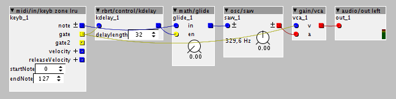

Anyone know if it is possible to detect overlapping MIDI notes? I want to create a mono legato effect, where overlapping notes set a Boolean outlet true, so I can use that to trigger a glide effect, or something else.
Possible?
a|x

Anyone know if it is possible to detect overlapping MIDI notes? I want to create a mono legato effect, where overlapping notes set a Boolean outlet true, so I can use that to trigger a glide effect, or something else.
Possible?
a|x
I use the glide object with enable. I route the gate signal first to a short k-rate delay and then to the glide enable input. This basically works, but doesn't allow for legato trills. I don't know to achieve those.
hmmmmmmmmm i have seen u asking this question some time ago, ...pls post the patch..
I have troubles to comprehend why its important to put a k_rate delay before the glide... i think it matters more after the glide ...to have note length 3.5 or 1.5 if u glide.
for instance if u glide from c1 to c1 there will be no glide....
so i think glide starts always on x.5 aka inverted gate!?
I studied the 303 schematics, and there is no thing like a delay, there is only condensator on/off for the glide ...
more important is how the 303 handels notelength when glide is on.
@JSZ
i got several TB quencers hanging here, and i dont post them because of that problem,
how does the 303 do note offs & slides?
and for the filter and else, there are coding sources in the net ...for instance
http://sccode.org/1-4Wy
i`d wish someone would import these to axo
open 303 vst.dll the code is open source
greetings!
I don't have a particular patch.
The delay matters because if you just route the gate signal straight to the glide enable, it will be on for every note. We only want to glide overlapping notes?
I don't know why you bring up the 303 in this thread. But I am pretty sure that on a 303 note off always happens halfway between the steps. So a one step note is actually half a step long. Slide or tie to the next step = note is 1.5 steps long. In my old 303 patch I think this was the behaviour.
Oh and about trills. What I mean by that is that if you hold C while tapping C#, you only get from C to C# once, and not back to C.
Yep, on the 303 notes where exactly half a step long, I think. Of course, because it was controlled by its own internal sequencer, it would know in advance not to turn off the gate if the next step was a slide or a tie, and not to retriever the envelopes on the next step. Lots of monosynths (or polysynths with a mono legato mode) do the same thing with overlapping notes.
The particular use-case that led me to make this enquiry was slightly different though. I want to create a (sort of) sample player, where overlapping notes don't reset the playback position, so you can retune the sample as it plays.
a|x
I think what's required to get mono legato to work properly is a method of keeping a count of currently-on notes, and setting a boolean TRUE when there are currently more than one note being held, and FALSE otherwise. That way, if you press more than one note while still holding one or more of the previous notes, you'll still be able to apply glide from the last-but-one note to the new one.
I don't know if this is possible, though. As all the MIDI inputs seem to be monophonic, I guess there's no way to get the note-off event of all notes that are released after another one has been pressed, so it wouldn't be possible to maintain a count of currently-held notes. Or am I wrong?
Maybe it needs a custom object that parses the raw MIDI messages to achieve this.
a|x
The least recently used keyboard object seems to work fine. I remember having some stuck note problems before but now it works.
@philoop this is what I mean with the delay. Remove it and every note will glide, even those that are not played legato.

This doesn't seem to work at all for me. It just triggers every note, then doesn't turn off until after the note has been released.
a|x
see attached subpatch for glide on legato with thrills. and without a delay object 
it's a really simple mono synth example.
squarevoice.axs (5.6 KB)
That's perfect, actually! Great work.
So the flipflop object is the key, then...
The velocity response feels a bit odd, somehow. I think it's because if you hold a note, when you release a subsequent note, the previous note can change in level, rather than returning at its original level, which can make things sound a bit odd, I think. I'm not sure there's any way around this. I'd probably just disable velocity mapping to VCA. Otherwise, it's great, though.
It's funny, I was just thinking earlier that I was really missing a setup that would do that classic Mono Legato sound, where if you held a low note while hitting higher notes, you'd get that swoop up to the higher note, then back down to the low note on release of the high one. I really like that effect, and remember it from long ago playing on a Roland Alpha Juno.
a|x
actually i will have a look at the keyb zone axo object to see if i can implement velocity "retriggering". the idea would be, that the velocity value would also be stored and not just the pitch.
actually thinking this over again, it makes sense that the velocity stays the same for untriggered lower notes. everything else is just very strange. imagin playing a c c# c thrill, it is much more convenient to have consistent velocity... as you suggest, for bass-line glides i would definitely disable velocity...
You're probably right. I think my perception of what sounds odd has been coloured by only ever having used this kind of legato effect on non-velocity-sensitive keyboards/and/or patches.
a|x